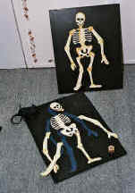

Momenteel hebben wij de volgende thema's
Het spookt behoorlijk bij jouw thuis. De kamer is volgehangen met griezelspullen uit de box en op de achtergrond speelt de griezelmuziek al.
Door goed je best te doen bij alle enge, maar vooral leuke spelletjes, kunnen jij en je vrienden/ vriendinnen en alle monsters en spoken het huis uit jagen.
Vleermuizen vangen, een echte spinnenrace, skeletpuzzels maken, een weerwolfspel, spoken verjagen, enz. 10 leuke, spannende, maar vooral ook griezelige spelletjes waar de kinderen veel plezier aan zullen beleven.
Tussendoor kan er nog een verhaal uit het griezelboek worden voorgelezen of kan er gezellig gedanst worden op de griezelmuziek.
In het programmaboek worden alle spelletjes duidelijk uitgelegd. Hier vindt U ook een aantal schminkvoorbeelden.
Chaos is de dierentuin. Alle dieren zijn ontsnapt en moeten weer terug in hun kooi. Bij de spelletjes kan je gelukkig veel dierenstickers verzamelen om weer in je eigen dierentuin te plaatsen.
Met de meegeleverde versiering wordt de huiskamer al tot een echte dierentuin omgetoverd. de kinderen kunnen mooie dierenprintcapes om. En als ze hun zelfgemaakte dierenmasker opzetten, voelen ze zich helemaal thuis in de dierentuin.
De olifant is zijn slagtanden kwijt, de giraf moet gevangen worden de de pinguïns houden een echte race. Natuurlijk moeten de apen gevoerd worden en met het aquariumspel wordt het aquarium gevuld met mooie vissen. Deze en nog veel meer spelletjes zorgen voor veel verjaardagsplezier.
Het programmaboek is voorzien van schminkvoorbeelden, duidelijk uitleg van alle spelletjes en een overzichtelijke inventarielijst.
Het is een drukte van belang op de Boerderij. Er moet dan ook van alles gebeuren. Jij en je vrienden helpen de boer en boerin een handje mee.
De kamer is gezellig versierd met de versiering uit de box en de muziek-cd met boerderijliedjes staat op. Het feest kan beginnen.
De kinderen beginnen met een leuk dierenmasker te maken. Vervolgens is het tijd voor de vele leuke spelletjes. Hierbij kunnen ze boerderijdierenstempels verdienen voor hun boerderijplaat.
Je moet de geit melken, kraaien wegjagen, eieren zoeken, er is een verkleedrace en nog veel meer. Om even uit te blazen van het harde werken kan er een leuk verhaal uit de meegeleverde verhalenboek verteld worden.
Alle spellen worden duidelijk uitgelegd in het programmaboek.
De kinderen kunnen ook als dier geschminkt worden met de bijgeleverde schmink. Voorbeelden staan in het programmaboek.
Het gaat er wild aan toe in het wilde westen.
De cowboy's en indianen werken samen om alle boeven te vangen die het wilde westen onveilig maken. Natuurlijk moet er dan wel goed geoefend worden in speergooien, spoorzoeken en vele andere dingen. Er is zelfs een echte boevenrace en natuurlijk mag de indianendans niet ontbreken op dit feest.
de kinderen kunnen een sheriffhes of indianenhes aan doen. Nog echter wordt het met de meegeleverde schmink. Ze maken een eigen sheriffhoed of indianenbijl om allemaal in de stemming te komen. De cowboy en indianenmuziek maken met de versiering de sfeer helemaal compleet.
Tussen de spelletjes door kan er nog voorgelezen worden uit het voorleesboek.
Met de spelletjes kunnen de kinderen boevenstickers verdienen om op hun eigen gevangenisdiploma te plakken.
Sprookjes bestaan bij Funbox Kinderfeesten.
De kinderen worden als tovenaars en elven meegenomen naar vele bekende sprookjes en kunnen toverkracht voor hun toverstafjes verdienen bij alle spelletjes.
Met de zelfgemaakte maskers, de fleurige rokjes en capes zien de kinderen er al mooi uit. Natuurlijk kunenn de kinderen ook nog fraai geschminkt worden met de meegeleverde schmink en schminkvoorbeelden.
De kamer kan met de versiering uit de box gezellig aangekleed worden en met de muziek-cd op de achtergrond wordt het nog gezelliger.
Bij de spelletjes moet er heksensoep gekookt worden en er wordt een langnekspel gespeeld. Natuurlijk ontbreken Assepoester, Klein Duimpje, en holle bolle Gijs ook niet op dit feest. Zo zijn er in het totaal 10 leuke spellen om te doen.
Tussendoor kan er nog een mooi sprookjesverhaal uit het voorleesboek gelezen worden.
Natuurlijk staat alles duidelijk uitgelegd in de handleiding, zodat U maar een korte voorbereidingstijd nodig heeft.
Er wordt een groot bal op het kasteel gegeven. Hiervoor wordt de kamer omgetoverd in een fraai paleis met de versiering uit de box.
De prinsessen krijgen een mooie jurk aan en maken een chte kroon voor zichzelf. Ook kunnen ze nog mooi geschminkt worden. De jongens gaan als stoere ridder verkleed.
Er worden allerlei leuke prinsessenspelletjes gespeeld, zoals de prinses op de erwt, een sterrendans en natuurlijk ontbreekt de betoverde kikker ook niet.
Als beloning bij de spelletjes krijgen de kinderen een echt balboekje, waar ze prinsen- en prinsessenstempels in kunnen zetten.
In het programmaboek vindt U een duidelijk uitleg van de spelletjes, een aantal schminkvoorbeelden en een complete inventarislijst.
Wie kent ze niet, al die leuke figuren uit het cirucs.
Je mag als clown meehelpen in het circus en beleeft daar allerlei leuke dingen.
Speel de grappigste spelletjes, zoals een evenwichtsspel, het ballonnen- opblaasspel, spijkerpoepen, leeuwen temmen en nog vele andere spellen. De kinderen krijgen een circusdiploma waar ze de verdiende stickers bij de spelletjes op kunnen plakken.
Natuurlijk ga je zelf ook als clown verkleed en kan je als clown geschminkt worden. Als knutselwerk wordt er een leuk clownshoedje gemaakt. De muziek CD zorgt voor nog meer gezelligheid.
Het programmaboek verzorgt een duidelijke handleiding en enkele schminkvoorbeelden. Ook het voorleesboek en versiering ontbreken niet in deze doos.
Reken maar dat het een leuk en grappig feest wordt.
Schip ahoy,
Als stoere piraat vaar je over alle zeven zeeën en beleef je vele avonturen.
Met de meegeleverde attributen en de schmink ben je zo omgetoverd tot een echte piraat. Je maakt als knutselwerk een echt piratenzwaard. Met de spelletjes kan kan je doodshoofdstickers verdienen.
Bij de spelletjes moet je haaien verjagen die om je schip varen en zal je ook moeten vissen om aan eten te komen. Er wordt een schatkaart bij elkaar gepuzzeld en er zal met kanonskogels worden gerold. Deze en alle andere leuke spellen zorgen ervoor dat je een stoere piraat wordt.
Aan het eind van de dag zullen er echte zeerovers weer naar huis gestuurd worden.
In de box zit natuurlijk de nodige attributen voor versiering, muziek en een duidelijke handleiding.